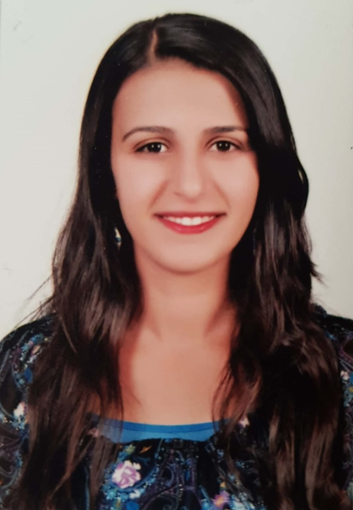

Marina Marcos Estasyous
Senior Software Engineer

Summary
Motivated senior software engineer with 6 years experience, talented at providing customized and optimized solutions for all needs. Highly passionate to solve code challenges, develop new systems, and always learn new technologies and coding techniques.
Experience
Senior Software Engineer
Digitaltest Corporation, Free Zone Nasr City, Cairo, Egypt.
2021 - Present
- Improved and optimized main application’s UI for seamless customer experience.
- Managed to cooperate with other teammates, engineers, sales managers through active listening and systematic communication.
- Supported and managed customer requests and needs.
- Contribute to a high raise in the sales over the past two years.
- Managed and maintained huge databases with SQL Server.
- Created statistical reports that run over huge databases with Microsoft RDLC
Software Engineer
Digitaltest Corporation, Free Zone Nasr City, Cairo, Egypt.
2019 - 2021
- Coded profitable apps using C#, SQL Server.
- Created a new module that facilitates the handling of the main application’s databases.
C# Developer
Pyramids Systems Development (PSD), Free Zone Nasr City, Cairo, Egypt.
2018 - 2019
- Fixed bugs and problems across the entire main application in an efficient way.
- Prepared and submitted reports and other documentation to assist development team members.
Trainee
Pyramids Systems Development (PSD), Free Zone Nasr City, Cairo, Egypt.
Summer 2017
- Attended a software development internship for a month.
- Performed software development activities using C++ and C# including: designing, coding, and debugging software modules.
Education
- Bachelor Degree of Computer and Systems Engineering, Faculty of Engineering, Ain Shams University (ASU), Cairo, Egypt, 2018.
- Department: Electrical Engineering.
- Major: Computer & Systems Engineering.
- Grade: Very Good.
- Courses Taken:
- Computer Organization I & II.
- Microprocessors Based Systems.
- Operating Systems.
- Analog Control Systems Design.
- Software Engineering.
- Programming using Data Structures.
- Artificial Intelligence.
- Computer Security.
- Database Systems.
- Graduation Project: Earned “Excellent” grade as co-developer on False-Positive Reduction for Static Analysis software tool, saving hundreds of personnel hours monthly for manual analysis.
- General Secondary Education Certificate, Hurghada Secondary School for Girls, Red Sea, Egypt, 2013.
Skills
- Analytical Thinking
- Effective Communication
- Teamwork
- Critical Thinking
- Problem Solving
Programming Languages
- C# (very good)
- C++ (good)
- SQL Server ( very good)
- python (good)
- Embedded C (good)
Other
About Me
Contact Me